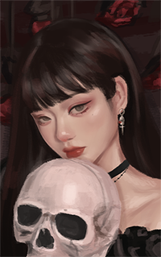

About
About the Project
This webpage was originally created because I realized that gallon trash bags were far more expensive than I thought they would be, so I wanted to document my trash to figure out what exactly was filling the bags so quickly.
While digging through my would-be pile of trash, I also became interested in what other people thought about trash.
My initial impression was that perhaps trash didn’t matter much to people outside of the typical “reuse, reduce, recycle” spiel to preserve our environment, but I was wrong. There were a lot more perspectives on trash than I expected.
One of the first articles I read was an interview with Sarah Newman, an archaeologist. She mentioned that “[a]rchaeology has sometimes been called ‘the science of rubbish’”, which I thought was interesting but at the same time, very factual. Archaeologists like Newman use what is essentially old trash from the past to determine how people might have lived or functioned. In her interview, she discussed how what we consider trash nowadays was used differently in the past, such as turning human waste into fertilizer. Considering how uses were found for things like human waste, Newman encourages people to change their thinking about trash, treating it as something that isn’t necessarily an inevitable byproduct of human life. After reading her article, I have certainly begun to think about trash differently, but it also led me to wonder what others might think about me based on what I discard.
Another article I read was written by Vik Muniz, an artist. I was immediately intrigued by his article because I am also an artist, though I create my pieces digitally rather than traditionally. Muniz reflected on his experiences observing the Jardim Gramacho garbage dump, located outside Rio de Janeiro, and how it became the gathering point for many things that were once useful. He found similarities between Gramacho and the remains of the Natural Museum of Brazil after a fire. He remarked that, although the Natural Museum of Brazil once held a collection of items that represented precious history, it ended up in a similar state to Gramacho, where it became a pile of trash (more specifically, ash). He turned his sadness over the museum's destruction into inspiration for creating art, using garbage from Gramacho to paint portraits of the people who work and live there. After reading the article, I began thinking about how I could channel my creativity and repurpose what I consider trash into art, like Muniz.
Having read articles about an archaeologist and artist, the next one I read took me across the world to Myanmar, where I learned about the work of an environmentalist, Inda Soe Atung. Like Muniz, he repurposes trash, though not for art. In an effort to fight against climate change and to reduce greenhouse gas emissions, he turns food waste into fertilizer. In a way, this is similar to what Newman had mentioned, about how human waste was used as fertilizer in the past, except that Atung uses vegetable waste. Not only is he repurposing what others in Myanmar consider trash, but he has also turned the conversion of food waste into a fertilizer business.
What started as curiosity about how other people thought about trash has become a much deeper reflective process, in which I have begun to view my trash documentation as more than just a project to save money on trash bags. It has completely changed my perspective, and I am also thinking about ways I can repurpose my trash creatively.
About the Author

Esiryn is an unemployed college dropout who was previously enrolled as the 84th member of the prestigious Genius Society. She insists that it is because the world is not ready for her astounding intellect and her groundbreaking methods of “saving time” (otherwise known as slacking off). It is a great mystery how she gained acceptance into such a institution in the first place. It is alleged that she has a special relationship with Madame Herta, on of the Genius Society’s elite members, but such rumors has not been confirmed.
Esiryn now spends most of her ample free time complaining about inanimate objects and how their betrayal will lead to her untimely death. Therefore, she has started posing with (fake) skulls and bones as exposure therapy.
Some of her other hobbies include gambling (in games) and defenestrating drawing supplies when her hands refuse to bring her overactive imagination to life
Follow her along on her latest shenanigans down below: